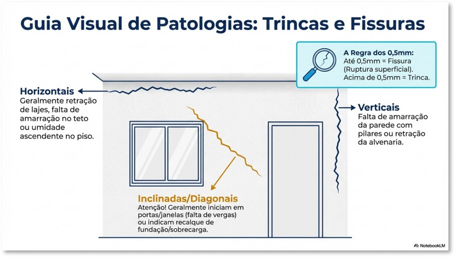
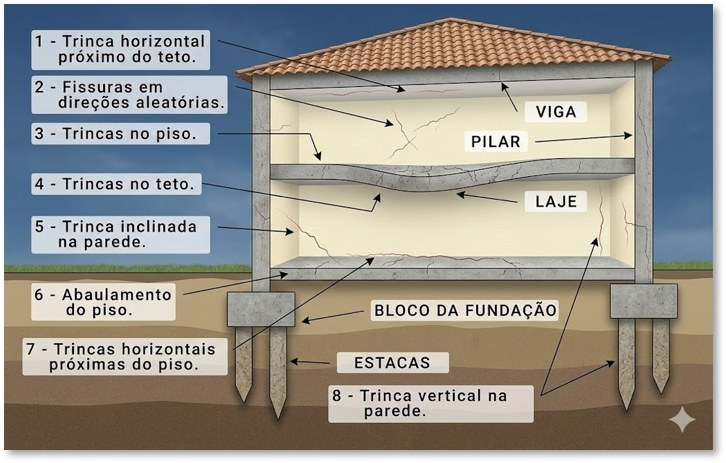
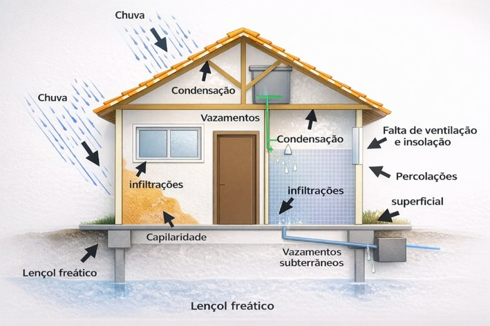

Paula Pacheco · Engenharia e Perícias
Paula Pacheco · Engenharia e Perícias
4.6 — Referencial técnico
Os fatores mais preponderantes nesta perícia são: perda de estanqueidade, vazamentos, trincas e fissuras. Considera-se fissura a ruptura de até 0,5 mm; acima disso, trinca. A direção e a origem orientam as tratativas de recuperação.
4.6.1 — Trincas e fissuras · classificação por direção e origem
FIG. 07 · 08

FIG. 07
Guia visual — direções típicas de fissuração em fachada e a regra dos 0,5 mm (fissura × trinca).
HORIZONTAIS
Retração de lajes, amarração com vigas, umidade ascendente.
VERTICAIS
Amarração da parede com pilares ou retração da alvenaria.
INCLINADAS
Portas/janelas sem vergas, recalque de fundação, sobrecarga.
ALEATÓRIAS
Retração da argamassa ou aderência da pintura.

FIG. 08
Corte esquemático — manifestações associadas à estrutura e às fundações.
4.6.2 — Umidade nas edificações
FIG. 09

FIG. 09
Mecanismos de penetração de água: chuva, condensação, infiltrações, capilaridade e vazamentos.
A umidade decorre da penetração indesejada de água — infiltração direta, condensação ou ascensão capilar. O fluxo constante promove a lixiviação: o produto lixiviado reage com o CO₂ da atmosfera formando carbonato de cálcio, a camada branca visível na superfície do concreto (DNIT — patologias em estruturas de concreto).
Paula Pacheco Engenharia e Perícias · CREA/MG 173.201 · IBAPE/MG 1221
10 | Pág.